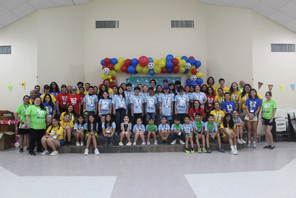

Give the Gift of Hope: Support Children Living with Diabetes
We're excited for you to join our cause and make a difference in the life of a child living with diabetes, and we know you're really going to make a difference. It's super easy. Just use the donation form below, and we'll process your contribution securely.
Your gift will help support children living with diabetes
This year has presented unique challenges, and as we reflect on the achievements and strides we've made together, we're reminded of the resilience these children demonstrate daily. Your generosity will empower us to reach more families, develop innovative programs, and provide vital resources to navigate the complexities of diabetes management.
At South Texas Juvenile Diabetes Association, we understand that managing diabetes is not just a physical challenge but an emotional and financial one as well. Your contribution, no matter the size, can make a significant difference. Together, we can ensure that every child living with diabetes has the opportunity to thrive, learn, and dream without the limitations imposed by this chronic condition.
Your tax-deductible donation will directly impact the lives of these children, providing them with the support they need to lead healthy, fulfilling lives. Your generosity is deeply appreciated.